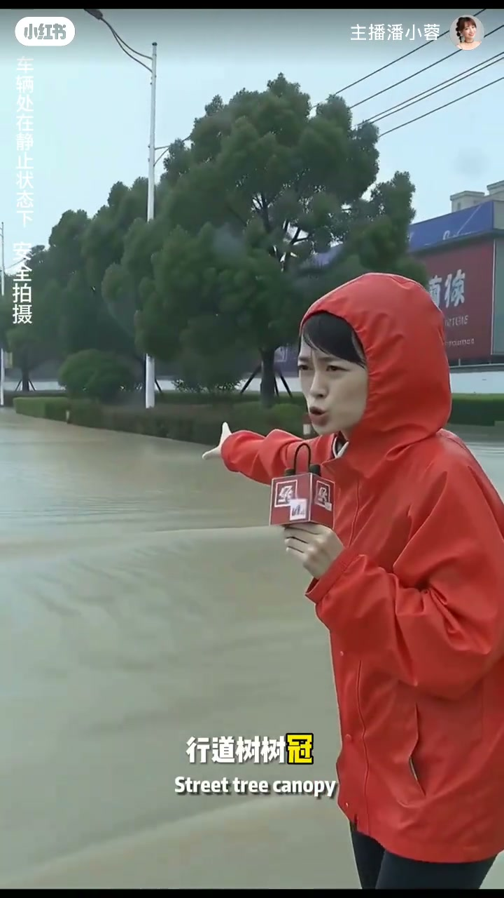
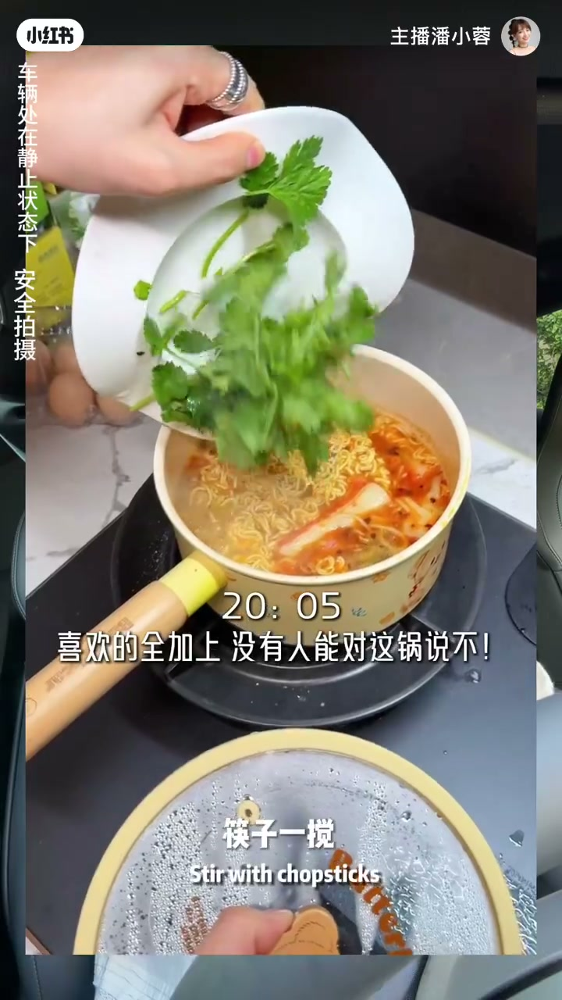

内容要点
开场点破：你说话别人总记不住，对方只会「哦对」然后就没有然后了。四天只练一件事——具体化，让听者脑子里自动放电影。前三天练结构把话说顺之后，仍可能干巴巴。作者从出镜记者经验出发：别说「风真的很大」，要说风雨倾斜砸过来、行道树树冠压得往一边塌、广告牌铁皮哗哗抖得像要撕开。方法叫「五感钩子法」：视听嗅味触里随便挑两个加进话里，多了像作文，两个刚刚好。用「周末煮泡面」改写示范，并布置三天打卡作业。
知识结构
记不住、只回哦对；四天练具体化，让对方脑内放电影。
别说风很大；风雨砸、树冠塌、广告牌抖——立刻有画面。
视听嗅味触任选两个；多了像作文，两个刚好。
错误「没干嘛」→感官改写；三天小事打卡 C4。
五感里挑两个钩子，把抽象形容词换成可看见/听见/闻到的细节——画面感就来了。
从「哦对」到脑子放电影
[00:00 → 00:19]痛点很具体：说完对方记不住，只能回「哦对」，话题断掉。今天起四天只练具体化——让听你说话的人脑子里自动放电影，注意力不自觉被吸引。
承接前三天结构练习：话已经不乱套，但还干巴巴。下一刀切在「画面感」。
出镜记者：别说「风很大」
[00:19 → 00:35]作者入行从出镜记者做起，写过几千条稿。上台别跟观众说「风风风真的很大」——要说风雨倾斜砸过来，行道树树冠压得往一边塌，广告牌铁皮哗哗抖得像要撕开：是不是马上有画面感？
差异不在形容词强度，而在把抽象「大」换成可见的动作与物体状态。

五感钩子法：只挑两个
[00:35 → 00:55]作者把用了十几年的受用方法叫「五感钩子法」：你看到什么颜色形状动作、听到什么声音、闻到什么、尝到什么味道、触摸到什么质感——五个里面随便挑两个，加到要说的话里。
多了会像写作文；两个刚刚好。这是剂量控制，不是感官越多越好。
泡面改写 + 三天打卡
[00:55 → 01:46]练习题：周一同事问周末干嘛了。错误版「没干嘛，就在家待着」——话题终结。调整版：周末在家煮了锅泡面，水咕嘟咕嘟冒泡，面饼放进去筷子一搅都散开，客厅都是香辣味，蹲在茶几旁稀溜稀溜吃，连汤喝干净。一样的事，多了两个感官，对方脑子立刻有画面。
作业：接下来三天，每天找一件小事（吃饭、通勤、排队、开会），用五感钩子法描述并录下来自己听；评论区打卡格式 C4 + 今天用五感描述的一件事，最好语音，作者批作业。
